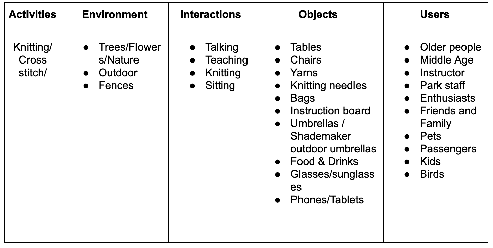
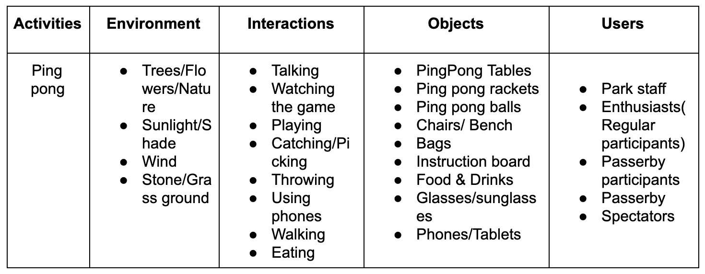
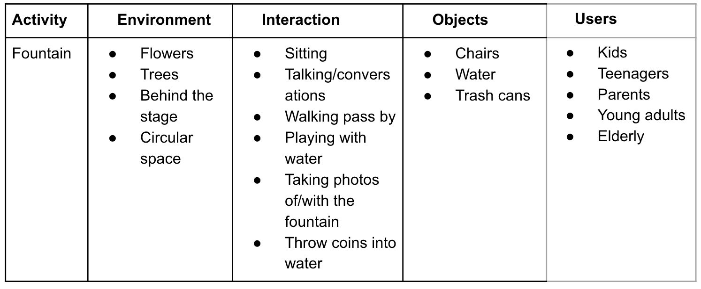
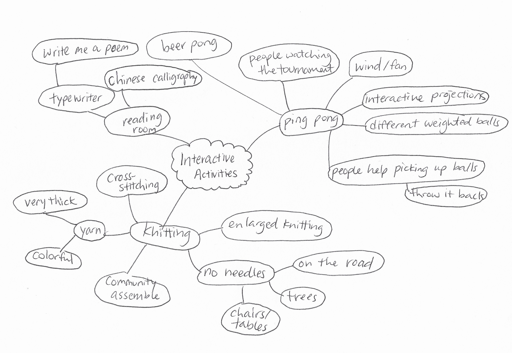

Prompt 2-Five Questions
WEEK 2 - MON, SEPT 9TH, 2019
QUESTION 1: How to think as a designer?
Actions: Keep peace and love to life and the world! Be passionate about everyday things--- observe
how things work, how people interact with others, environment, artifacts and etc. Keep thinking and
recording ideas that pop up in life. Put questions that I am interested in into practice in some class
projects. In projects, carry out the five-steps design process, learning from making to practice
creative research and always jump out of the box.
QUESTION 2: How to learn those skills?
Actions: Take full advantage of the resources of the newschool like the University Learning Center
and the Making Center. Ask for tutoring when needing help. ”Exchaning” skills with classmates would also
be an efficient way to learn. More importantly, practice and learn in projects.
QUESTION 3: How to improve my expressing ability?
Actions: From my perspective, a design project is also a process of storytelling. Telling a good
story requires me to possess adequate knowledge, so I would keep reading, thinking and absorbing. To
expressing properly, firstly, I’m supposed to clear my role and the emotions I want to convey in a
design project. Keep writing and documenting to clarify the logic between each step in the project.
QUESTION 4: What is a good design and how to learn from them?
Actions: To achieve this goal, in the first place I should learn how to critique others’ work
including art and design since art and design are usually combined. For an artwork, observe first to
gather the basic information about it, analyze and describe the art regarding its style, subject matter,
and color. Then try to interpret its meaning. Last, evaluate and make my judgment about the art. As for
design work, observe or use it to evaluate whether it fulfilling its purpose effectively and efficiently
and whether it creates positive change and inspire with beautiful, intelligent craftsmanship. Later on,
learn to give constructive feedback to promote my own thinking and development of others’ designs if
possible.
QUESTION 5: What kinds of social value I want to create?
Actions: Keep an open mind and pay attention to some social issues, insight into them and combine
with what I have learned in courses to find reasonable solutions or just convey ideas. I love nature and
care about children, so to protect the natural environment and create better products and environments
for children may be the social value I want to achieve. I want my design to be warm and happy, cope with
people’s needs and touch with their emotions.
Posted in CC LECTURE
Prompt 1-Five Goals of Wayne
WEEK 1 - SUN, SEPT 1ST, 2019
GOAL 1: Developing my own thinking, methods and concepts of design
This is what identifies me as a designer and pushes me to figure out the design field I want to devote
to. To achieve it, I will study and practice in various studios in DT, seek help and communication from
teachers and classmates. Hopefully, I could form a rigorous but creative thinking.
GOAL 2: Developing a solid skills set
This would prepare my career as a professional designer. I need certain skills like coding, modeling,
prototyping and etc to realize my design or convey some design ideas.
e able to think and work independently and contribute to a team . I would learn in elective courses and
dorkshops, communicate and learn from fellow classmates and practice in making projects. Meanwhile, I am
supposed to be aware of the industry development.
GOAL 3: Being a good storyteller
Our world is established from all kinds of physical objects as well as various collective imaginations.
Telling a good story requires me to possess adequate knowledge, so I would keep reading, thinking and
absorbing. Telling a good story also requires me to have good communication and expression ability, and
logical thinking as well. These skills would also help me perform better in teamwork.
GOAL 4: Good taste/aesthetic of design
A designer need to know what good design is first, then he would be able to make good design. I would
take advantage of the rich museum resources in NYC, observe and insight into the multicultural city and
get inspiration from it. Also, since a lot of fellow students in DT are from an art background, learning
from the creative DT community would definitely help me achieve the goal.
GOAL 5: Participate in some projects with social value
I want to be a designer that understands and shoulders certain social responsibility. Pay attention to
some social issues, insight into them and combine with what I have learned in courses to find reasonable
solutions or just convey ideas.
Posted in CC LECTURE
Instruction Sets for Strangers ——— Design Methods
WEEK 1 - FRI, AUG 30TH, 2019

Why Bryant Park?
Bryant Park is one of the few parks that are mostly enjoyed by local New Yorkers. Being surrounded by
many office buildings, schools, and New York Public Library, you can find many students and young
professionals hanging out at the park. However, the park is also a great place for kids and the elderly.
Throughout the year Bryant Park hosts various activities including sports tournaments, painting
sessions, dancing classes and much more.
Bryant Park is a condensed miniature of New York
itself: people from all different age groups, cultures and backgrounds exist harmoniously
all in one place.
AEIOU
We started by observing some regular activities in Bryant Park.




Obesrvation & Behavioral Mapping

Observation of Ping Pong:
- Time: 12:00 - 12:40 pm
- Participant: 10 people
- Read instructions/ask staff: 12 people
- Stop to watch: 43 people
- Help to pick up balls: 31 people
- Participants:
- Most participants come regularly and they know each other, kind of shaping a community. Few
are
new to this game.
- The game is easily affected by wind.
- For those “irregular” participants, they always sign up and play with their friends coming
along.
- Passersby:
- Some of them would interact with the participants by picking ping-pong coincidently.
- Some of them were interested in joining the game but left because they need to sign in and
wait
for taking turns(10 minutes).
- A lot of people would stop to watch the game for a while.
Observation of Knitting:
Knitting was one of the activities that stood out for us. Knitting is known as a long, repetitive
process that requires a lot of patience and commitment from one person. Usually, we associate this
activity with moms or grandmas. We thought, how can we revolutionize this activity, reverse the
making process and the maker:
- Contributed by many different people from different background/culture/generation
- Short commitment - stitch one and go
- Freeform
- Visual interactions
Observation of the Fountain:

- The fountain is on the central axis of the park, with a large flow of passersby.
- Some people walked past the fountain without even looking at it.
- Most of the people who played around with water are children.
Bryant Park is a space that suggests interactions and socialization - mostly human but also animals.
After walking around the park and observing some different activities, we realized that - while
Bryant Park is able to bring all different kinds of people together, they rarely interact
with one another, - there isn't much reason to. We'd like to give them a reason. A lot
of people describe New Yorker as rude, cold-hearted and impatient. We want to find out if that
really is the case.
Brainstorming
Guiding Questions:
How can we reinvent the purpose of an activity/game that changes the way people interact and their
understanding of the game?
How can we create a relaxing interactive experience among different groups of passersby but costs
them little time?

How can we reignite people's curiosity for a daily object/architect/environment?

Concept Sketch
Inspired by knitting:
The idea is that we would enlarge the size of
cross-stitch, setting up a big panel with thick yarn for passersby to knit.

Interaction with the fountain :We planned to set up a set of fishing outfit right
next to the fountain, hoping to create contrast to arouse people’s curiosity.

Posted in Major Studio 01
DAY ONE!
MON, AUG 26TH, 2019
Great start of the semester! My journey in Parsons MFA Design & Technology officially started!! Nice
to meet you Harpreet! And thank you for the first class!

Posted in Major Studio 01